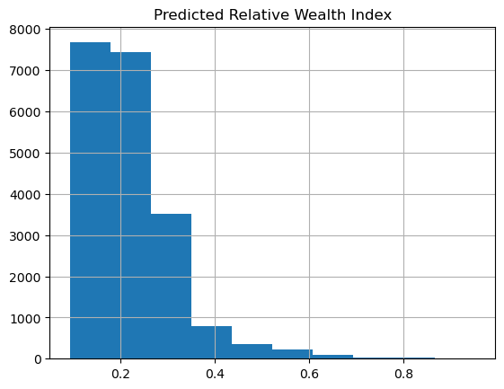
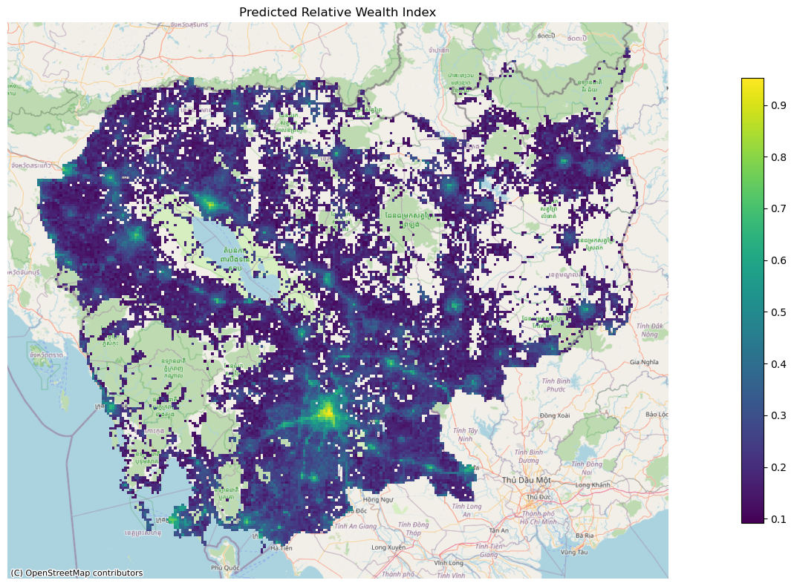
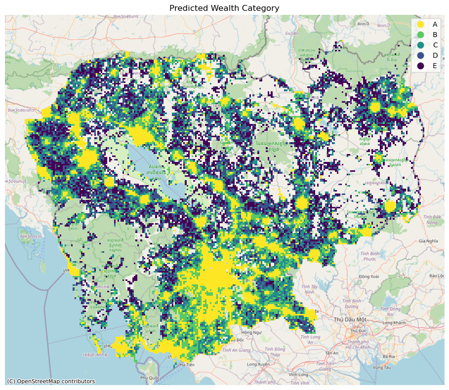

%matplotlib inline
%reload_ext autoreload
%autoreload 2Predict on rollout grids
import os
import sys
sys.path.append("../../../")
import getpass
import pickle
from pathlib import Path
import contextily as cx
import geopandas as gpd
import matplotlib.pyplot as plt
import numpy as np
import pandas as pd
from povertymapping import nightlights, settings
from povertymapping.dhs import generate_dhs_cluster_level_data
from povertymapping.feature_engineering import (
categorize_wealth_index,
generate_features,
)
from povertymapping.iso3 import get_region_name
from povertymapping.rollout_grids import get_region_filtered_bingtile_gridsModel Prediction on Rollout Grids: Cambodia
This notebook is the final step in the rollout and runs the final model to create relative wealth estimations over populated areas within the given country. The model predictions will have a spatial resolution of 2.4km.
The predicted relative wealth value gives us the relative wealth level of an area compared to the rest of the country, which fixes the value range from 0 (lowest wealth) to 1 (highest wealth). In between these extremes, each area’s wealth estimate is scaled to a value between 0 and 1.
The predicted relative wealth value is later binned into 5 wealth categories A-E by dividing the distribution into quintiles (every 20th percentile).
Set up Data Access
The following cell will prompt you to enter your EOG username and password. See this page to learn how to set-up your EOG account.
# Log-in using EOG credentials
username = os.environ.get("EOG_USER", None)
username = username if username is not None else input("Username?")
password = os.environ.get("EOG_PASSWORD", None)
password = password if password is not None else getpass.getpass("Password?")
# set save_token to True so that access token gets stored in ~/.eog_creds/eog_access_token
access_token = nightlights.get_eog_access_token(username, password, save_token=True)2023-04-05 13:46:31.789 | INFO | povertymapping.nightlights:get_eog_access_token:48 - Saving access_token to ~/.eog_creds/eog_access_token
2023-04-05 13:46:31.793 | INFO | povertymapping.nightlights:get_eog_access_token:56 - Adding access token to environmentt var EOG_ACCESS_TOKENSet country-specific parameters
COUNTRY_CODE = "kh"
COUNTRY_OSM = get_region_name(COUNTRY_CODE, code="alpha-2").lower()
OOKLA_YEAR = 2019
NIGHTLIGHTS_YEAR = 2016
rollout_date = "-".join(os.getcwd().split("/")[-2].split("-")[:3])
rollout_grids_path = Path(f"./{rollout_date}-{COUNTRY_CODE}-rollout-grids.geojson")
rollout_grids_pathPath('2023-02-21-kh-rollout-grids.geojson')Set Model Parameters
# Model to use for prediction
MODEL_SAVE_PATH = Path(f"./{rollout_date}-{COUNTRY_CODE}-single-country-model.pkl")Load Country Rollout AOI
The rollout area of interest is split into 2.4km grid tiles (zoom level 14), matching the areas used during model training. The grids are also filtered to only include populated areas based on Meta’s High Resolution Settlement Layer (HRSL) data.
Refer to the previous notebook 2_kh_generate_grids.ipynb for documentation on generating this grid.
aoi = gpd.read_file(rollout_grids_path)
# aoi.explore() # Uncomment to view data in a mapGenerate Features For Rollout AOI
%%time
rollout_aoi = aoi.copy()
# Create features dataframe using generate_features module
features = generate_features(
rollout_aoi,
country_osm=COUNTRY_OSM,
ookla_year=OOKLA_YEAR,
nightlights_year=NIGHTLIGHTS_YEAR,
scale=False,
features_only=True,
)2023-04-05 14:41:32.864 | INFO | povertymapping.osm:download_osm_country_data:199 - OSM Data: Cached data available for cambodia at /home/jace/.geowrangler/osm/cambodia? True
2023-04-05 14:41:32.866 | DEBUG | povertymapping.osm:load_pois:161 - OSM POIs for cambodia being loaded from /home/jace/.geowrangler/osm/cambodia/gis_osm_pois_free_1.shp
2023-04-05 14:41:37.809 | INFO | povertymapping.osm:download_osm_country_data:199 - OSM Data: Cached data available for cambodia at /home/jace/.geowrangler/osm/cambodia? True
2023-04-05 14:41:37.809 | DEBUG | povertymapping.osm:load_roads:180 - OSM Roads for cambodia being loaded from /home/jace/.geowrangler/osm/cambodia/gis_osm_roads_free_1.shp
2023-04-05 14:41:47.525 | DEBUG | povertymapping.ookla:load_type_year_data:79 - Contents of data cache: []
2023-04-05 14:41:47.526 | INFO | povertymapping.ookla:load_type_year_data:94 - Cached data available at /home/jace/.geowrangler/ookla/processed/2465c710198cce764617e5dcd64daa3d.csv? True
2023-04-05 14:41:47.527 | DEBUG | povertymapping.ookla:load_type_year_data:99 - Processed Ookla data for aoi, fixed 2019 (key: 2465c710198cce764617e5dcd64daa3d) found in filesystem. Loading in cache.
2023-04-05 14:41:48.395 | DEBUG | povertymapping.ookla:load_type_year_data:79 - Contents of data cache: ['2465c710198cce764617e5dcd64daa3d']
2023-04-05 14:41:48.396 | INFO | povertymapping.ookla:load_type_year_data:94 - Cached data available at /home/jace/.geowrangler/ookla/processed/5e2fba99f739e7c8ef16f333688160db.csv? True
2023-04-05 14:41:48.397 | DEBUG | povertymapping.ookla:load_type_year_data:99 - Processed Ookla data for aoi, mobile 2019 (key: 5e2fba99f739e7c8ef16f333688160db) found in filesystem. Loading in cache.
2023-04-05 14:41:49.792 | INFO | povertymapping.nightlights:get_clipped_raster:414 - Retrieving clipped raster file /home/jace/.geowrangler/nightlights/clip/1f70f0c0704210204430993a9b5499ce.tifCPU times: user 1min 9s, sys: 27.3 s, total: 1min 36s
Wall time: 1min 38sInspect the generated features
features.info()<class 'geopandas.geodataframe.GeoDataFrame'>
Int64Index: 20137 entries, 0 to 20136
Data columns (total 61 columns):
# Column Non-Null Count Dtype
--- ------ -------------- -----
0 poi_count 20137 non-null float64
1 atm_count 20137 non-null float64
2 atm_nearest 20137 non-null float64
3 bank_count 20137 non-null float64
4 bank_nearest 20137 non-null float64
5 bus_station_count 20137 non-null float64
6 bus_station_nearest 20137 non-null float64
7 cafe_count 20137 non-null float64
8 cafe_nearest 20137 non-null float64
9 charging_station_count 20137 non-null float64
10 charging_station_nearest 20137 non-null float64
11 courthouse_count 20137 non-null float64
12 courthouse_nearest 20137 non-null float64
13 dentist_count 20137 non-null float64
14 dentist_nearest 20137 non-null float64
15 fast_food_count 20137 non-null float64
16 fast_food_nearest 20137 non-null float64
17 fire_station_count 20137 non-null float64
18 fire_station_nearest 20137 non-null float64
19 food_court_count 20137 non-null float64
20 food_court_nearest 20137 non-null float64
21 fuel_count 20137 non-null float64
22 fuel_nearest 20137 non-null float64
23 hospital_count 20137 non-null float64
24 hospital_nearest 20137 non-null float64
25 library_count 20137 non-null float64
26 library_nearest 20137 non-null float64
27 marketplace_count 20137 non-null float64
28 marketplace_nearest 20137 non-null float64
29 pharmacy_count 20137 non-null float64
30 pharmacy_nearest 20137 non-null float64
31 police_count 20137 non-null float64
32 police_nearest 20137 non-null float64
33 post_box_count 20137 non-null float64
34 post_box_nearest 20137 non-null float64
35 post_office_count 20137 non-null float64
36 post_office_nearest 20137 non-null float64
37 restaurant_count 20137 non-null float64
38 restaurant_nearest 20137 non-null float64
39 social_facility_count 20137 non-null float64
40 social_facility_nearest 20137 non-null float64
41 supermarket_count 20137 non-null float64
42 supermarket_nearest 20137 non-null float64
43 townhall_count 20137 non-null float64
44 townhall_nearest 20137 non-null float64
45 road_count 20137 non-null float64
46 fixed_2019_mean_avg_d_kbps_mean 20137 non-null float64
47 fixed_2019_mean_avg_u_kbps_mean 20137 non-null float64
48 fixed_2019_mean_avg_lat_ms_mean 20137 non-null float64
49 fixed_2019_mean_num_tests_mean 20137 non-null float64
50 fixed_2019_mean_num_devices_mean 20137 non-null float64
51 mobile_2019_mean_avg_d_kbps_mean 20137 non-null float64
52 mobile_2019_mean_avg_u_kbps_mean 20137 non-null float64
53 mobile_2019_mean_avg_lat_ms_mean 20137 non-null float64
54 mobile_2019_mean_num_tests_mean 20137 non-null float64
55 mobile_2019_mean_num_devices_mean 20137 non-null float64
56 avg_rad_min 20137 non-null float64
57 avg_rad_max 20137 non-null float64
58 avg_rad_mean 20137 non-null float64
59 avg_rad_std 20137 non-null float64
60 avg_rad_median 20137 non-null float64
dtypes: float64(61)
memory usage: 10.0 MBRun Model on AOI
Load Model
with open(MODEL_SAVE_PATH, "rb") as f:
model = pickle.load(f)Make Predictions
rollout_aoi["Predicted Relative Wealth Index"] = model.predict(features.values)Binning predictions into wealth categories
Afterwards, we label the predicted relative wealth by binning them into 5 categories: A, B, C, D, and E where A is the highest and E is the lowest.
We can create these wealth categories by splitting the output Predicted Relative Wealth Index distribution into 5 equally sized quintiles, i.e. every 20th percentile.
This categorization may be modified to suit the context of the target country.
rollout_aoi["Predicted Wealth Category (quintile)"] = categorize_wealth_index(
rollout_aoi["Predicted Relative Wealth Index"]
).astype(str)Save Output
%%time
rollout_aoi.to_file(
f"{rollout_date}-{COUNTRY_CODE}-rollout-output.geojson",
driver="GeoJSON",
index=False,
)CPU times: user 22.5 s, sys: 672 ms, total: 23.2 s
Wall time: 23.8 s# Join back raw features and save
rollout_output_with_features = rollout_aoi.join(features)
rollout_output_with_features.to_file(
f"{rollout_date}-{COUNTRY_CODE}-rollout-output-with-features.geojson",
driver="GeoJSON",
index=False,
)Visualizations
Inspect predicted relative wealth index and output dataframe
rollout_aoi[["Predicted Relative Wealth Index"]].hist()array([[<Axes: title={'center': 'Predicted Relative Wealth Index'}>]],
dtype=object)
rollout_aoi.head()| quadkey | shapeName | shapeISO | shapeID | shapeGroup | shapeType | pop_count | geometry | Predicted Relative Wealth Index | Predicted Wealth Category (quintile) | ... | mobile_2019_mean_avg_d_kbps_mean | mobile_2019_mean_avg_u_kbps_mean | mobile_2019_mean_avg_lat_ms_mean | mobile_2019_mean_num_tests_mean | mobile_2019_mean_num_devices_mean | avg_rad_min | avg_rad_max | avg_rad_mean | avg_rad_std | avg_rad_median | |
|---|---|---|---|---|---|---|---|---|---|---|---|---|---|---|---|---|---|---|---|---|---|
| 0 | 13223001030111 | Botum Sakor | None | KHM-ADM2-3_0_0-B77 | KHM | ADM2 | 1.530576 | POLYGON ((103.16162 10.81172, 103.16162 10.833... | 0.132976 | E | ... | 0.0 | 0.0 | 0.0 | 0.0 | 0.0 | -0.064363 | 0.013467 | -0.025393 | 0.019338 | -0.025305 |
| 1 | 13223001013222 | Botum Sakor | None | KHM-ADM2-3_0_0-B77 | KHM | ADM2 | 1.530576 | POLYGON ((103.18359 10.83331, 103.18359 10.854... | 0.127728 | E | ... | 0.0 | 0.0 | 0.0 | 0.0 | 0.0 | -0.067641 | 0.010784 | -0.029816 | 0.019521 | -0.031274 |
| 2 | 13223001031000 | Botum Sakor | None | KHM-ADM2-3_0_0-B77 | KHM | ADM2 | 6.122304 | POLYGON ((103.18359 10.81172, 103.18359 10.833... | 0.152541 | E | ... | 0.0 | 0.0 | 0.0 | 0.0 | 0.0 | -0.052187 | 0.015620 | -0.017331 | 0.021790 | -0.017005 |
| 3 | 13223001012210 | Kiri Sakor | None | KHM-ADM2-3_0_0-B78 | KHM | ADM2 | 8.403372 | POLYGON ((103.05176 10.89804, 103.05176 10.919... | 0.181468 | C | ... | 0.0 | 0.0 | 0.0 | 0.0 | 0.0 | -0.006993 | 0.063116 | 0.020211 | 0.015892 | 0.017605 |
| 4 | 13223001012211 | Kiri Sakor | None | KHM-ADM2-3_0_0-B78 | KHM | ADM2 | 6.302529 | POLYGON ((103.07373 10.89804, 103.07373 10.919... | 0.255417 | B | ... | 0.0 | 0.0 | 0.0 | 0.0 | 0.0 | -0.027030 | 0.075026 | 0.014192 | 0.026372 | 0.009149 |
5 rows × 71 columns
Create Static Maps
Plot Predicted Relative Wealth Index
plt.cla()
plt.clf()
rollout_aoi_plot = rollout_aoi.to_crs("EPSG:3857")
ax = rollout_aoi_plot.plot(
"Predicted Relative Wealth Index",
figsize=(20, 8),
cmap="viridis",
legend=True,
legend_kwds={"shrink": 0.8},
)
cx.add_basemap(ax, source=cx.providers.OpenStreetMap.Mapnik)
ax.set_axis_off()
plt.title("Predicted Relative Wealth Index")
plt.tight_layout()
plt.savefig(f"{rollout_date}-{COUNTRY_CODE}-predicted-wealth-index.png")
plt.show()<Figure size 640x480 with 0 Axes>
Plot Predicted Relative Wealth Index Category
plt.cla()
plt.clf()
rollout_aoi_plot = rollout_aoi.to_crs("EPSG:3857")
ax = rollout_aoi_plot.plot(
"Predicted Wealth Category (quintile)",
figsize=(20, 8),
cmap="viridis_r",
legend=True,
)
cx.add_basemap(ax, source=cx.providers.OpenStreetMap.Mapnik)
ax.set_axis_off()
plt.title("Predicted Wealth Category")
plt.tight_layout()
plt.savefig(f"{rollout_date}-{COUNTRY_CODE}-predicted-wealth-bin.png")
plt.show()<Figure size 640x480 with 0 Axes>
Create an Interactive Map
cols_of_interest = [
"quadkey",
"shapeName",
"shapeGroup",
"pop_count",
"avg_rad_mean",
"mobile_2019_mean_avg_d_kbps_mean",
"fixed_2019_mean_avg_d_kbps_mean",
"poi_count",
"road_count",
"Predicted Relative Wealth Index",
"Predicted Wealth Category (quintile)",
]
# Warning: This can be a bit laggy due to the large amount of tiles being visualized
# Uncomment the ff if you want to viz the raw wealth predictions
# rollout_aoi.explore(column='Predicted Relative Wealth Index', tooltip=cols_of_interest, cmap="viridis")
# Uncomment the ff if you want to view the quintiles
# rollout_aoi.explore(column='Predicted Wealth Category (quintile)', tooltip=cols_of_interest, cmap="viridis_r")Alternatively, you may also try to visualize this interactively in Kepler by uploading the rollout output geojson file.